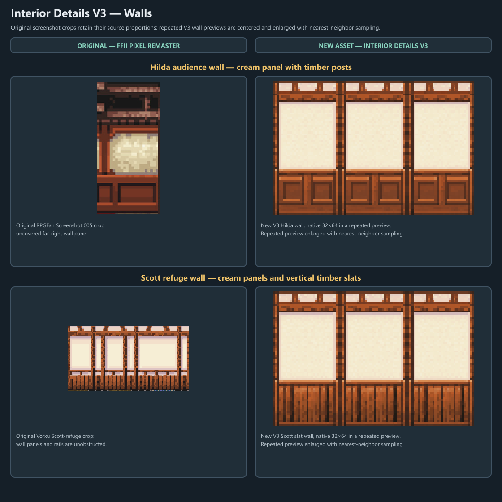
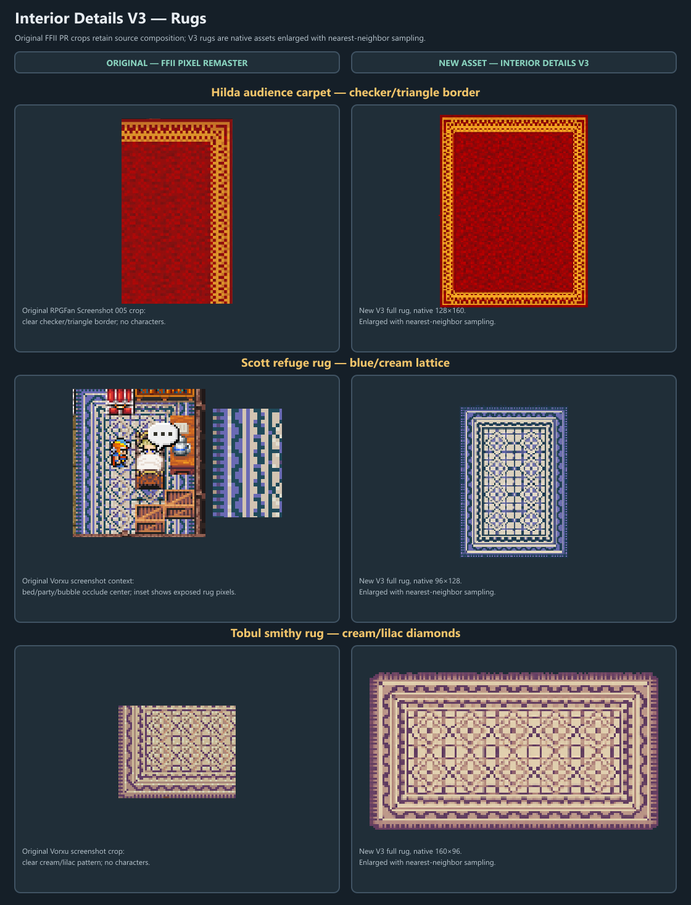
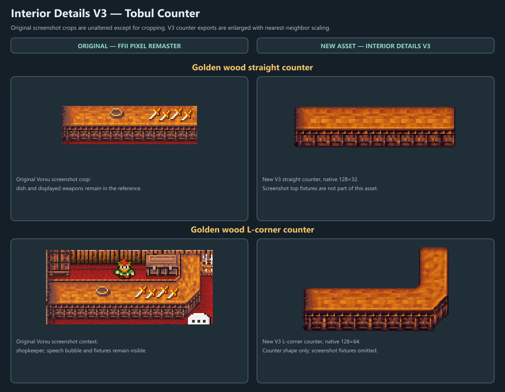

Hilda’s checker/triangle fringe is carried into the red/gold rug. Scott’s exposed PR fragment shows the cream/blue lattice; the V3 whole rug adds a repeated rosette field. Tobul’s clear cream/lilac crop and V3 rug both use interlocking geometry.
Interior Details V3 — Original Reference and New Art
Side-by-side asset review, 2026-10-31. Left panels show actual FFII Pixel Remaster screenshot crops; right panels show new Interior Details V3 exports or explicitly labeled repeat previews.
7 primary components represented across three comparison boards
Source captures: Hilda audience scene, RPGFan Screenshot 005; Scott refuge, Vorxu Altair & Fynn; Tobul smithy, Vorxu Salamand & Semitt Falls. Crop rectangles, source hashes, labels, and occlusion notes are in source-crops.json.
Walls
Hilda and Scott wall styles compare against their matching captured rooms. The original Hilda wall crop is shown at source proportions, with the caption clear below it.

Rugs
Each source crop sits beside the complete V3 rug. The Hilda reference shows a clean border corner; Scott’s full room crop has bed/party occlusion with an exposed-corner inset.

Tobul counter and shop
The original source crop shows the gold counter and visible display items. New counter assets represent the counter surface/front only; those fixtures are not baked in.

Review notes
The V3 Hilda and Scott wall styles preserve cream panels and timber framing, with separate motifs for lower panels versus vertical slats. Repeated preview strips are made from the new native wall exports, not screenshot pixels.
The V3 straight and L-corner assets share a golden wood top and dark patterned face. The screenshot has dish/weapon display fixtures; the new counter art intentionally shows only the counter.
The source crop files are saved as PNGs from preserved JPEG/WebP captures without retouching. In the boards, crops are kept at source proportions; the tall Hilda red-rug crop is reduced with nearest-neighbor scaling to fit its panel. New V3 art is enlarged with nearest-neighbor sampling; display scale varies to fit the comparison panels. This comparison does not claim retail 1:1 fidelity or game integration.
Rebuild source: build-boards.js (requires Sharp and the staging Assets folder). Records: production manifest snapshot · review proof manifest snapshot · reference crop inventory.